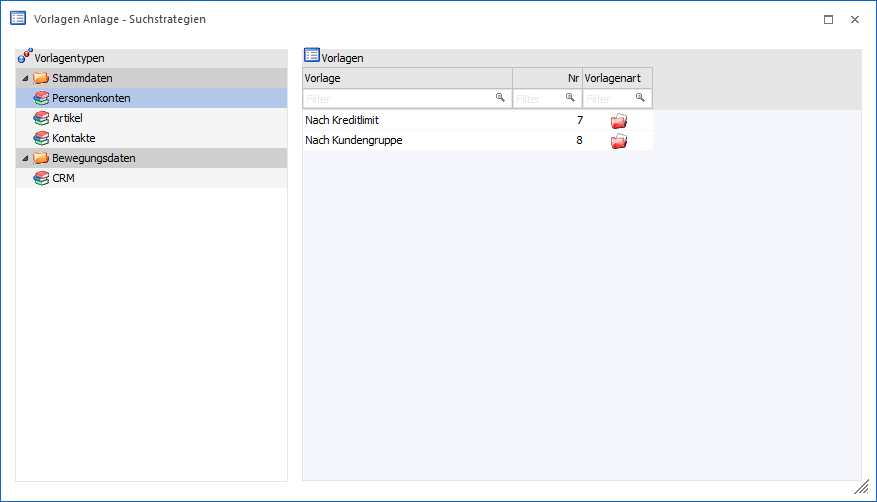
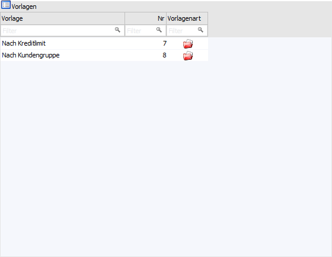

Wenn der Menüpunkt "Suchstrategien" geöffnet wird, so kann zunächst die zu bearbeitende Vorlage ausgewählt bzw. der Typ der neuanzulegenden Vorlage bestimmt werden.
Hinweis
Die Definition der Vorlage als solches wird in dem Kapitel Vorlagendefinition - Suchstrategien detailliert erläutert.

Vorlagentyp
Zuerst muss ausgewählt werden, welcher Vorlagentyp bearbeitet werden soll. Dabei wird zwischen den Vorlagen für "Stammdaten" und "Bewegungsdaten" unterschieden.
Ø Stammdaten
ü Personenkonten
ü Artikel
ü Kontakte
Ø Bewegungsdaten
ü CRM
Tabelle "Vorlagen"

In der Vorlagentabelle werden alle Vorlagen des ausgewählten Typs angezeigt.
Ø Vorlage
Hier wird der Name der Vorlage angezeigt.
Ø Nr
In dieser Spalte wird die interne Vorlagennummer angezeigt.
Ø Vorlagenart
In dieser Spalte wird angezeigt, um welche Art von Vorlage es sich handelt. Dabei gibt es 3 Unterscheidungen:
ü - Suchstrategie
Wenn in der Spalte diese
Grafik angezeigt wird, dann handelt es sich bei der Vorlage um eine
Suchstrategie. Suchstrategien können im Personen-, Artikel- und CRM-Matchcode
verwendet werden und dienen dazu Suchabfragen (in welchem Feld soll welcher Wert
gesucht werden) zu steuern bzw. individuell vorbelegt zu lassen.